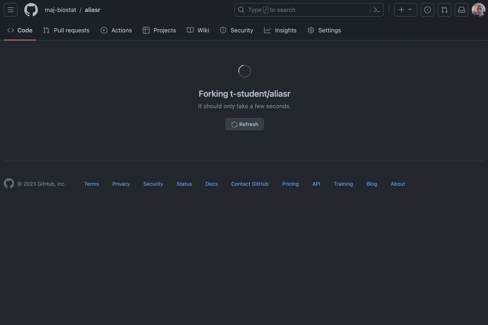

12 GitHub - forks and pull requests
We have considered settings where an indiviual creates a repository to which you (and/or others) may be added as collaborators and then contribute via the shared repository workflow introduced in the fundamentals.
However, there are circumstances where you will not be a part of a project team but you would like to contribute to a project. For example, you may want to contribute to an existing CRAN R package for which the code is stored on GitHub, as many now are.
There is a lot of documentation (some of it infinitely and frustratingly dense) on forks and pull requests that I have attempted to summarise, probably poorly, and combined with my own understanding obtained from experience. This section is therefore necessarily incomplete in that it does not reflect all of the possible considerations and functionality. Hopefully, it will give you some understanding and some practice and you can develop as need be from there.
12.0.1 Fork repository
Forks are a GitHub function that permit a complete copy of any public repository on GitHub, effectively taking a snapshot at a specific point in time. If you are not the owner or a collaborator on a project then the only way that you will be able to make any changes to the files is if you take a fork.
Clicking the fork button gives you a configuration screen where you can give your own name for the copy when it shows up in your account.
A fork is (more or less) a clone that happens within the bounds of the GitHub hosting service. After you take a fork, you would then clone as usual from that fork (that now sits in your account) as a remote to create a local repo.
You may choose to fork a repository for several reasons, here are four.
- As a way to contribute to a project (e.g. an R package)
- To use someone’s code as a starting point (e.g. simulation code)
- To experiment with some code
- To use one of your own projects as the basis for a new project1
Based on the process above, the fork will no longer be directly attached to the original repository but you can take an additional step (see later) so that you have the original repository as a remote in order to keep your version up to date.
- If you fork from a private repository, when/if that repository is deleted, all forks are deleted.
- If you fork from a public repository and the upstream repository is deleted, one of the public forks is selected to be the new upstream repository.
Let’s use the digest CRAN package as a quick example. Go to the GitHub source, click fork, accept the defaults and click create and then clone the repository to your local machine as shown below.
git clone https://github.com/maj-biostat/digest.git
## Cloning into 'digest'...
## remote: Enumerating objects: 3174, done.
## remote: Counting objects: 100% (843/843), done.
## remote: Compressing objects: 100% (274/274), done.
## remote: Total 3174 (delta 471), reused 826 (delta 463), pack-reused 2331
## Receiving objects: 100% (3174/3174), 2.15 MiB | 3.25 MiB/s, done.
## Resolving deltas: 100% (2034/2034), done.There is some common terminology that relates to the fork process, so I will introduce next.
When you clone the forked repository to your local machine, the forked repository (the one now sitting in your account) is considered as the remote origin, and the repository you forked from (the original one belonging to Dirk) is upstream. The picture looks like this, try to keep it in mind.
Once you have the local repo, you can edit the code and push your changes to your account.
If you have it in mind that you would like to push back to the upstream source at some point in the future, it is advisable (actually strongly advisable) to leave your forks main branch the hell alone and work purely off development branches. That is, do not push to your main branch and keep all of your features within their own dedicated feature branches. This is because if you keep things in branches, it is much easier to see what is yours and what is theirs. That isn’t a complete reason, but this is one of those rules that if will make your life easier if you just follow it without too much question.
As mentioned, you would not be able to push directly to Dirk’s source as you are not a collaborator on that project. Initially, you won’t even be able to keep up to date with Dirk’s work because there is no direct link between his repo and your local. To make this link, you need to add Dirk’s repo as the upstream remote:
git remote add upstream https://github.com/eddelbuettel/digest.git
git remote -v
## origin https://github.com/maj-biostat/digest.git (fetch)
## origin https://github.com/maj-biostat/digest.git (push)
## upstream https://github.com/eddelbuettel/digest.git (fetch)
## upstream https://github.com/eddelbuettel/digest.git (push)This will make the dotted line in the figure above into a solid line. The final thing you want to do is to track the upstream main branch instead of the origin main branch. This makes sure that you are keeping your repo up to date with any changes that Dirk’s is making on his upstream source.
git branch -u upstream/mainAfter that, you should be good to go.
As time goes on, you can now fetch the latest changes that Dirk has made and merge them in with any local modifications you have made.
git fetch upstream
## remote: Enumerating objects: 30, done.
## remote: Counting objects: 100% (27/27), done.
## remote: Compressing objects: 100% (8/8), done.
## remote: Total 18 (delta 12), reused 15 (delta 9), pack-reused 0
## Unpacking objects: 100% (18/18), 4.95 KiB | 337.00 KiB/s, done.
## From https://github.com/eddelbuettel/digest
## * [new branch] feature/crc32c -> upstream/feature/crc32c
## * [new branch] feature/redo_pr195 -> upstream/feature/redo_pr195
## * [new branch] master -> upstream/masterI believe the above process (or at least some of it) is also possible through the GitHub interface but I have not used that approach.
If you are keen for Dirk to consider your changes for inclusion in a release of the digest package, then you will need to prepare a pull request.
12.0.2 Pull requests
A pull request basically tells others that you have pushed a set of changes to a branch in a repository on GitHub. Pull requests are not managed by git, these are something that GitHub implemented as a value-add. However, git does integrate pull requests as part of its distributed design, it simply does not care what mechanism is used to implement the pull request. As far as git is concerned, a pull request could simply be an email from you to some third party that informs them about your change and gives them the option to pull the change into their repository. On top of a line of communication, GitHub adds on things like a formal framework for providing review comments on the proposed changes.
Pull requests are (or can be) applicable under both the fork and pull workflow processes and the shared repository workflow. In the shared repository workflow, pull requests could be useful as a means to initiate code review prior to development branches being merged into the main branch. Here, we will only cover pull requests for the fork and pull workflow, but the process for a share repository is very similar.
In brief, the steps are:
- Fork and clone the repository on which you want to contribute
- Create a new branch for your development
- Develop
- Push your branch to your fork
- Create a pull request, providing the requisite description of the change
- Submit the pull request
- Address any reviewer comments
- Push request is approved and merged
12.0.3 Pull request demo
Again, doing will make this more concrete. In order that we have do all the steps, I created the aliasr repository under the GitHub user t-student.
Just listen to this first and then you can have a go.
12.0.3.1 Fork and clone repo
From my maj-biostat work account, I navigate to the aliasr repo and click the fork button. Note that I changed to dark theme so that you can distinguish the two different accounts.

Now that I have forked the R package repo, I can clone it to my local machine in the usual manner.
git clone https://github.com/maj-biostat/aliasr.git
## Cloning into 'aliasr'...
## remote: Enumerating objects: 11, done.
## remote: Counting objects: 100% (11/11), done.
## remote: Compressing objects: 100% (6/6), done.
## remote: Total 11 (delta 0), reused 11 (delta 0), pack-reused 0
## Receiving objects: 100% (11/11), done.Before I do anything else, from the terminal I change directory to aliasr and then add the t-student repo as the upstream.
git remote -v
## origin https://github.com/maj-biostat/aliasr.git (fetch)
## origin https://github.com/maj-biostat/aliasr.git (push)
git status
## On branch main
## Your branch is up to date with 'origin/main'.
##
## nothing to commit, working tree clean
git remote add upstream https://github.com/t-student/aliasr.git
git remote -v
## origin https://github.com/maj-biostat/aliasr.git (fetch)
## origin https://github.com/maj-biostat/aliasr.git (push)
## upstream https://github.com/t-student/aliasr.git (fetch)
## upstream https://github.com/t-student/aliasr.git (push)And then I first bring any commits down from the upstream and then tell git to track the upstream main branch instead of my remote origin.
If you miss the git fetch upstream you will not have access to the main branch and the git branch -u upstream/main command will fail as a result.
git fetch upstream
## From https://github.com/t-student/aliasr
## * [new branch] main -> upstream/main
git branch -u upstream/main
## branch 'main' set up to track 'upstream/main'.12.0.3.2 Feature branch and feature development
Remembering best practice, I create a new branch in my local repo for my feature development and switch to that branch.
git branch feat-csum
git checkout feat-csumOk, so if I look at the commit logs in my local repo I have the following:
git log --all
## commit 8e9007a5ca648770671a1f0b12c352b6690131cd (HEAD -> feat-csum, upstream/main, origin/main, origin/HEAD, main)
## Author: Mark Jones <maj684@gmail.com>
## Date: Wed Nov 15 07:24:02 2023 +0800
##
## Initiall commitOpening the project in rstudio (or VIM if you are so inclined), I add a new function to the end of the abbrv.R script
csum <- function(x, na.rm = T){
x_new <- x[!is.na(x)]
c_x_new <- cumsum(x_new)
c_x <- x
c_x[!is.na(c_x)] <- c_x_new
c_x
}And can test it with the usual procedures for building and installing an R Package, namely:
cd ..
R CMD build aliasr
R CMD INSTALL aliasr_0.1.0.tar.gzand then load that library in an R session and test the new csum function
## R version 4.3.0 (2023-04-21) -- "Already Tomorrow"
## Copyright (C) 2023 The R Foundation for Statistical Computing
## Platform: aarch64-apple-darwin20 (64-bit)
##
## R is free software and comes with ABSOLUTELY NO WARRANTY.
## You are welcome to redistribute it under certain conditions.
## Type 'license()' or 'licence()' for distribution details.
##
## Natural language support but running in an English locale
##
## R is a collaborative project with many contributors.
## Type 'contributors()' for more information and
## 'citation()' on how to cite R or R packages in publications.
##
## Type 'demo()' for some demos, 'help()' for on-line help, or
## 'help.start()' for an HTML browser interface to help.
## Type 'q()' to quit R.
library(aliasr)
csum(c(1, NA, 3, 5))
[1] 1 NA 4 9Based on this rather superficial testing, I stage and commit.
git add R/abbrv.R
git commit -m "Implementation of cumsum alias"
## [feat-csum 5e5be52] Implementation of cumsum alias
## 1 file changed, 7 insertions(+)And now I push the feature branch to my fork (here I am specifying both the remote and the branch).
git push origin feat-csum
## Enumerating objects: 7, done.
## Counting objects: 100% (7/7), done.
## Delta compression using up to 8 threads
## Compressing objects: 100% (3/3), done.
## Writing objects: 100% (4/4), 442 bytes | 442.00 KiB/s, done.
## Total 4 (delta 2), reused 0 (delta 0), pack-reused 0
## remote: Resolving deltas: 100% (2/2), completed with 2 local objects.
## remote:
## remote: Create a pull request for 'feat-csum' on GitHub by visiting:
## remote: https://github.com/maj-biostat/aliasr/pull/new/feat-csum
## remote:
## To https://github.com/maj-biostat/aliasr.git
## * [new branch] feat-csum -> feat-csum12.0.3.3 Sync with upstream (and merge conflicts)
I am all ready and excited to create a pull request, but reviewing my fork on GitHub, I see that there has been a covert change to the upstream repository while I have been developing the csum feature. Specifically, I appear to be 2 commits behind the upstream repo.
To address this, I need to merge the changes.
git fetch upstream
## remote: Enumerating objects: 10, done.
## remote: Counting objects: 100% (10/10), done.
## remote: Compressing objects: 100% (2/2), done.
## remote: Total 7 (delta 3), reused 7 (delta 3), pack-reused 0
## Unpacking objects: 100% (7/7), 647 bytes | 92.00 KiB/s, done.
## From https://github.com/t-student/aliasr
## 8e9007a..14b1c35 main -> upstream/mainUrgh. It was all going so well. Merge conflicts are common and, if you use git, you are going to see this message sooner or later.
git merge upstream/main
## Auto-merging R/abbrv.R
## CONFLICT (content): Merge conflict in R/abbrv.R
## Automatic merge failed; fix conflicts and then commit the result.Running status, we can see that git merged the new README.md into our repository with no problem but it had difficulties with the abbrv.R script.
git status
## On branch feat-csum
## You have unmerged paths.
## (fix conflicts and run "git commit")
## (use "git merge --abort" to abort the merge)
##
## Changes to be committed:
## new file: README.md
##
## Unmerged paths:
## (use "git add <file>..." to mark resolution)
## both modified: R/abbrv.ROpening the R/abbrv.R script, you will be able to see conflict markers (<<<<<<<, =======, >>>>>>>) have been incorporated by git where the merge failed. You see the changes from the HEAD (or base branch) after the line <<<<<<< HEAD. In this case, this is what you just introduced. You can also see ======= dividing the changes from the other branch, i.e. those that are in the upstream version.
# TOP PART OF SCRIPT OMITTED FOR BREVITY
csum <- function(x, na.rm = T){
x_new <- x[!is.na(x)]
c_x_new <- cumsum(x_new)
<<<<<<< HEAD
c_x <- x
c_x[!is.na(c_x)] <- c_x_new
c_x
=======
c_x_new
>>>>>>> upstream/main
}At this point you need to decide what you want to keep and so edit the script to the following.
# TOP PART OF SCRIPT OMITTED FOR BREVITY
csum <- function(x, na.rm = T){
x_new <- x[!is.na(x)]
c_x_new <- cumsum(x_new)
c_x <- x
c_x[!is.na(c_x)] <- c_x_new
c_x
}Stage and commit.
git add R/abbrv.R
git commit -m "Resolved merge conflict by retaining majbiostat implementation."As always, the log shows the history of the repository. We can see the two commits that were made in the upstream repo while I was working on the feat-csum branch.
git log --all
## commit 9c949d06702c6513409e7a2119466437ad060a87 (HEAD -> feat-csum)
## Merge: c615c0c 14b1c35
## Author: Mark Jones <mark.jones1@sydney.edu.au>
## Date: Wed Nov 15 08:00:32 2023 +0800
##
## Resolved merge conflict by retaining majbiostat implementation.
##
## commit 14b1c3514033c88155f6a15f87ac9fc3ed915fe6 (upstream/main)
## Author: Mark Jones <maj684@gmail.com>
## Date: Wed Nov 15 07:55:40 2023 +0800
##
## Csum implementation
##
## commit cc35ec0a25dab3e388d704b2ca19808808629ed9
## Author: Mark Jones <maj684@gmail.com>
## Date: Wed Nov 15 07:54:05 2023 +0800
##
## Readme for landing page
##
## commit c615c0c65e9225436c96bb00df1cb64d0194a4d2 (origin/feat-csum)
## Author: Mark Jones <mark.jones1@sydney.edu.au>
## Date: Wed Nov 15 07:28:06 2023 +0800
##
## Implementation of cumsum alias
##
## commit 8e9007a5ca648770671a1f0b12c352b6690131cd (origin/main, origin/HEAD, main)
## Author: Mark Jones <maj684@gmail.com>
## Date: Wed Nov 15 07:24:02 2023 +0800
##
## Initiall commitBased on this, I can push to my fork:
git push origin feat-csum
## Enumerating objects: 4, done.
## Counting objects: 100% (4/4), done.
## Delta compression using up to 8 threads
## Compressing objects: 100% (2/2), done.
## Writing objects: 100% (2/2), 327 bytes | 327.00 KiB/s, done.
## Total 2 (delta 1), reused 0 (delta 0), pack-reused 0
## remote: Resolving deltas: 100% (1/1), completed with 1 local object.
## To https://github.com/maj-biostat/aliasr.git
## c615c0c..9c949d0 feat-csum -> feat-csumand if I want to be tidy, I can switch to local/main and run a fetch then merge in order that my main branch is also in sync with the upstream. After that I can push to main. In brief:
git checkout main
git fetch upstream
git merge
git push originStrictly speaking, I believe the above isn’t really necessary, but it gets rid of some notifications at the GitHub end that can be a bit concerning if taken on face value.
12.0.3.4 Create PR
With all that done, your fork should look something like the following.
Clicking the compare & pull request intiations the pull request process.
Note:
- The source and the targets along with GitHubs comment that merging is possible.
- A description providing an overview of the feature
- Allowing edits by maintainers (i.e. those with appropriate privaleges on the upstream repo can commit to your branch)
- A visual diff of the before and after implementation of the impacted script (or scripts)
Clicking on create will provide you with a PR summary:
12.0.3.5 Incorporating PR into upstream repo
Heading back to the upstream repo (and importantly under my t-student account) I can see that a pull request has been created. Three options are available to do the merge
- Merge
- Squash and merge
- Rebase and merge
You can pick one of the above options (but I am not sure how you would rewind if things go wrong) or you can use the command line.
The first thing you need to do is fetch the pull request detail. To do this you specify pull/<PR ID>/head:<branch name> where the <PR ID> was listed in the PR page and the <branch name> is just some arbitrary branch name you want to give this feature. Again, at the terminal, as the owner of the upstream repo:
git fetch origin pull/1/head:feat001
## remote: Enumerating objects: 12, done.
## remote: Counting objects: 100% (12/12), done.
## remote: Compressing objects: 100% (2/2), done.
## remote: Total 6 (delta 3), reused 6 (delta 3), pack-reused 0
## Unpacking objects: 100% (6/6), 698 bytes | 116.00 KiB/s, done.
## From github.com:t-student/aliasr
## * [new ref] refs/pull/1/head -> feat001From here, as the owner of the upstream repo and the person that ultimately decides whether the feature will be incorporated into the aliasr package or not, you can make whatever edits you want by simply checking out feat001. After you are satisfied, then you can merge back into main and push up to the repo.
The --no-ff says no fast forward. This is a shortcut method git can take when there are no local changes. Use this flag when you want the history of merging a feature from somewhere else.
git checkout main
git merge --no-ff feat001
## Merge made by the 'ort' strategy.
## R/abbrv.R | 4 +++-
## 1 file changed, 3 insertions(+), 1 deletion(-)
git push origin main
## Enumerating objects: 13, done.
## Counting objects: 100% (13/13), done.
## Delta compression using up to 8 threads
## Compressing objects: 100% (6/6), done.
## Writing objects: 100% (7/7), 814 bytes | 814.00 KiB/s, done.
## Total 7 (delta 3), reused 0 (delta 0), pack-reused 0
## remote: Resolving deltas: 100% (3/3), completed with 2 local objects.
## To github.com:t-student/aliasr.git
## 14b1c35..a904f44 main -> mainNow, when you go back to the the aliasr you will see that the pull request has been closed.
I know. That was a lot. The objective here is to give you a preview or at least cursory understanding of the underlying concepts and required actions rather than just simply knowledge of what buttons to press.
Yes, you can fork your own repos, although a template repository might be more suitable depending on your goals.↩︎